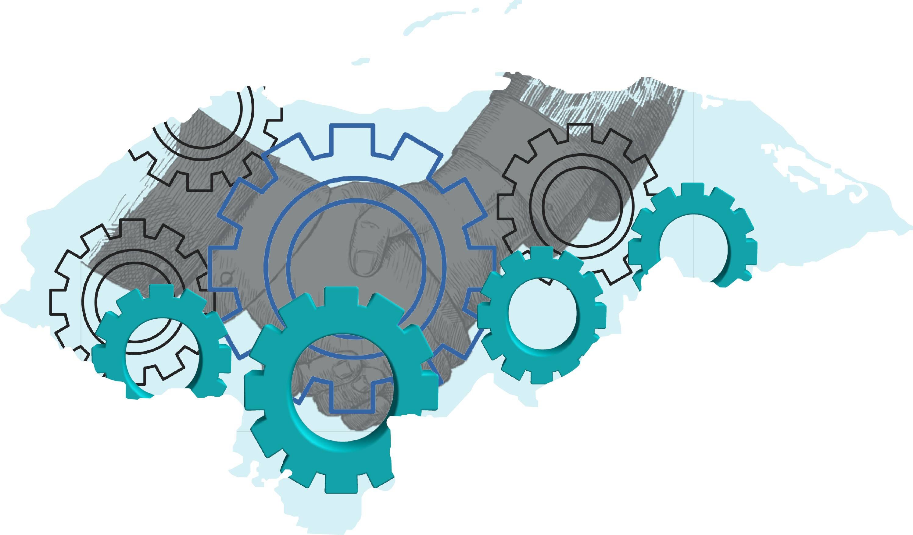

<article class = "container text-justify">
  <section class = "row">
    <div class = "col-12">
      <div class = "">
        
      </div>

      <h1>RR HH tecnológico</h1>
      <hr class = "linea_titulo">
      <p>
        Soporte de Informática calificado para empresas que buscan personal técnico para 
        proyectos o permanentes.
        La tercerización de RR HH en los departamentos de Tecnología e Informática 
        logra que las instituciones se enfoquen directamente en el negocio.         
      </p>
    </div>
  </section>
</article>
